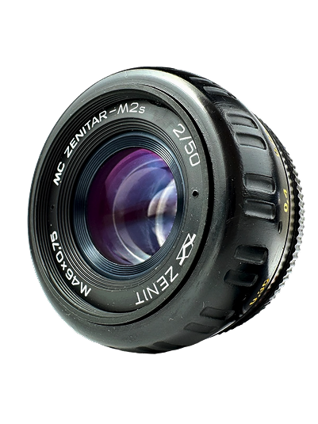
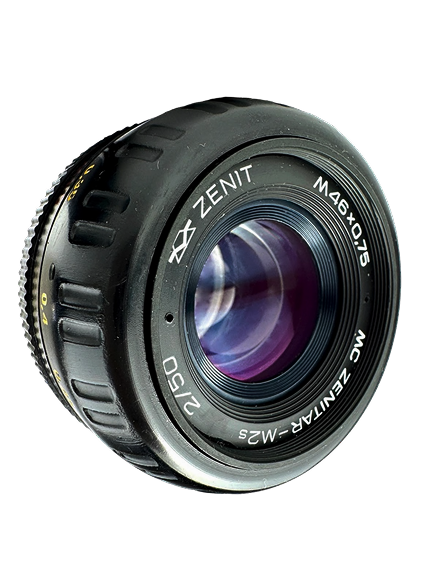
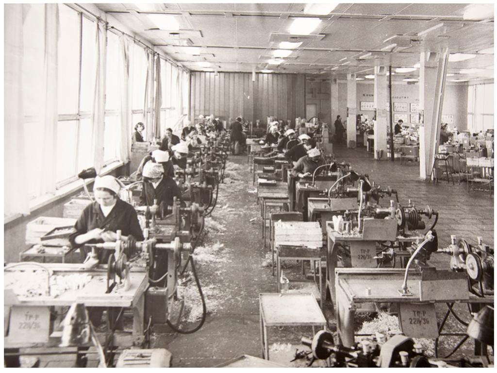

О Нас
Валдайский завод «Юпитер» построили в городе Валдай в 1973 году для производства объективов к фотокамерам «Зенит».


В начале 1970-х годов в СССР был большой дефицит, включая фотокамеры и объективы. «Зенит» считался одной из лучших камер того времени. Завод «Юпитер» строили как филиал Красногорского оптико-механического завода и поставлял ему основную часть продукции. Предприятие разместили в небольшом городке с населением около 20 тысяч человек, хотя по проекту там должно было работать примерно 8 тысяч сотрудников. Главным продуктом завода стал штатный объектив «Гелиос» в разных модификациях.
Производство было массовым: каждый месяц выпускали около 30 000 объективов. Поэтому в цехах стояло много станков-автоматов, а технологии подбирались под такой масштаб. Основные процессы включали изготовление линз диаметром от 10 до 100 мм и нанесение просветляющих и отражающих покрытий. Механический цех делился на две разные части: в одной изготавливали алюминиевые детали заготовки, в другой их обрабатывали до готовых деталей. Затем детали отправляли на гальванику и покраску.

Также небольшими партиями выпускали широкоугольные объективы «Мир» и «Юпитер», а «Вариозенитар» готовили к массовому производству. На заводе работала военная приемка для нужд Министерства обороны.
В настоящее время
С 2000 по 2010 год завод выпускал монокуляры и бинокли ночного видения на электронно-оптических преобразователях нулевого поколения.
Сейчас предприятие производит оптико-механические изделия: коллиматорные прицелы, приборы ночного видения, специальные объективы, крепления для оружия и сопутствующие аксессуары.
Оптика специального назначения
© ЗАО «Завод Юпитер»
Наверх ↑